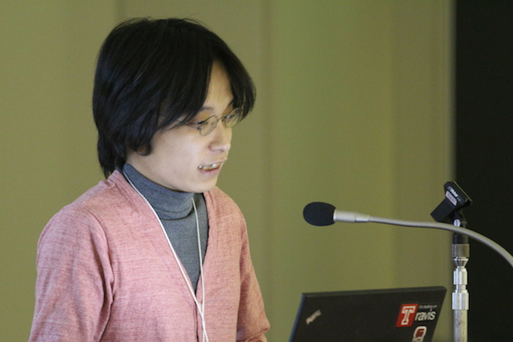
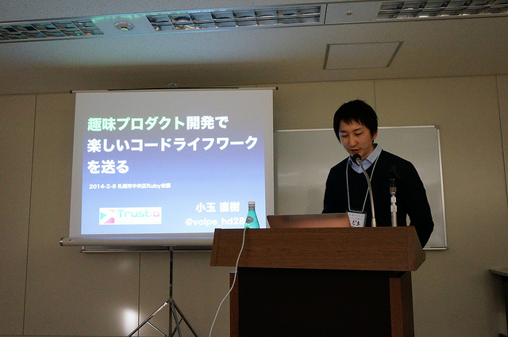
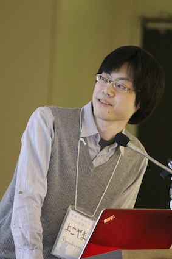
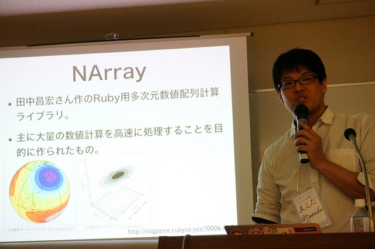

RegionalRubyKaigi レポート (43) 札幌市中央区 Ruby 会議 01
RegionalRubyKaigi レポート 札幌市中央区 Ruby 会議 01
はじめに
厳しい寒さが続く中、札幌市中央区 Ruby 会議 01が開催されました。 札幌で地域 Ruby 会議が開催されるのは札幌 Ruby 会議 2012以来です。 前回の国際的な会議とは対照的に、札幌で生活しているひと向けのとてもちいさな地域 Ruby 会議でした。
札幌市中央区 Ruby 会議 01 について
- 開催日時
- 2014/2/8(土) 13:00 〜 18:00
- 会場
- 参加費用
- 1,000 円
- 主催
- 札幌市中央区 Ruby 会議 01 実行委員
- 後援
- 公式ハッシュタグ
- #chuork01
- Togetter
Rails あるある ~現場での悩みとアンチパターン~ - 佐藤竜之介(@tricknotes)
: 
「『これはいい！』と思ってやったのに、手遅れ気味になったときに良くなかったことに気付いた！」
Rails には、開発を楽にするための様々な機能があります。 しかし、使いどころを間違えると、あとで変更に弱くなってしまい、辛い思いをすることがあります。 そんな経験をふまえて、「これは良くない！」と感じたアンチパターンについて、札幌市中央区 Ruby 会議 01 実行委員の佐藤さんが発表されました。
このセッションで、佐藤さんが説明されたアンチパターンは以下の 4 つです。
- default_scope
- serialize
- save(validate: false)
- as_json
これらのアンチパターンを実例を用いて説明されました。 詳細は佐藤さんの発表資料に記載されていますので、興味がある方は目を通してみるといいかもしれません。
Rails には魅力的な機能がたくさんあります。 ただ、パッと見た印象だけでその機能を採用してしまうと、適切ではない場面に利用してしまうこともあるそうです。 そんなときは勇気を持って引き返すことが大事だと話されました。
「状況によって適切な選択かどうかは変わってきます。」 「Rails の機能や作るものを理解して、一歩一歩進んで行きましょう。」 と発表を締めくくられました。
photo by Shimada Koji
ひでお(仮) - ヽ（´・肉・｀）ノ(@niku_name)
: 
「ひでお」というタイトルは『「ひ」とり 「で」ぶ(Dev) 「お」ぷす(Ops)』という意味だそうです。 このタイトルは、アプリケーション開発者でも運用環境構築の自動化をもっとやってみようという思いに由来するとのことです。
今回の発表は、ヽ（´・肉・｀）ノさん(以下、にくさん)が「ひとりで開発と運用をやるのでお互いは理解できている」との体験から、 プロダクトをよりよくするために運用環境の属人性を防ぐことのメリットを感じられた体験に基づく発表だそうです。
その体験の中から、今回の発表では CI 環境構築に焦点をあててお話されました。 にくさんがオススメされていたのは以下のツール群です。
これらのツールについての説明はにくさんの資料で公開されています。
こちらの発表資料の中では、入門者向けにどこからやってみるのがオススメか、 「帰ったらやってみよう」という宿題の形で紹介されています。 なので、「自分でもやってみたいけど何から手を付ければいいのかわからない！」という方は、 この資料に目を通してみてください。
今回の発表は CI 環境構築に焦点を絞ってのお話でしたが、 運用環境構築の自動化というテーマはまだまだ奥が深そうです。 「にく先生の次回作にご期待ください」と発表を締めくくられたので、 この次のお話を聞くのがとても楽しみですね！
photo by @ayako119
なるはや Ruby on Rails - 浦嶌啓太(@ursm)
: 
「速さは正義です。」 ということで、限られた開発リソースの中でいかに Rails アプリケーションを速くするかというテーマでお話されました。
浦嶌さんは永和システムマネジメントのチーフプログラマとして活躍されており、 数多くの Rails アプリケーション開発の経験をお持ちです。
その経験の中から、Rails アプリケーションを「なるはや」にするためのポイントとして次のふたつに焦点を絞って紹介されました。
- アプリケーションサーバの違い
- background worker のご紹介
それぞれついて詳しく見てみましょう。
アプリケーションサーバの違い
Rails アプリケーションは一度にひとつのリクエストしか処理できません。 他のリクエストを処理している最中に発生したリクエストは待たされます。 そうすると、処理能力を超えるリクエストが発生するとアプリケーションは停止してしまいます。 これを防ぐためには並行にリクエストを処理する必要性がでてきます。
並行処理にはいくつかの戦略があります。
- マルチスレッド
- マルチプロセス
- Reactorパターン
それぞれのパターンの得手不得手があるため、 アプリケーションの特徴によってどの戦略が効果的かというのは異なってきます。
Rails のアプリケーションサーバには Passenger や Thin などいくつかの種類があり、 それぞれ採用しているパターンが異なっています。
それを踏まえると、使い分け基準は次のようになるとのことです。
- Passenger, Unicorn はマルチプロセスモデルで汎用性が高い
- Puma はマルチスレッドモデルで、I/O バウンドな処理が多いアプリケーションに向いている
- Thin は Reactor パターンで実装されており IO に時間がかかる接続に対してプロセスが張り付かないため、フロントの Web サーバがいない場合に向いている
background worker のご紹介
background worker とは、”特定の処理 (ジョブ) をアプリケーションとは別のプロセスで非同期実行する仕組み” とのことです。 メール送信や検索インデックスの更新など、すぐにやらなくてもいい処理を後回しにすることで速やかにレスポンスを返すことができます。
Rails から利用できる background worker にもいろいろな実装があり、それぞれに特徴があります。
これらはジョブの保存先(オンメモリ/RDB/Redis)やワーカの動作方法(スレッド/プロセス)の違いがあり、 遅延させたい処理の内容によって使い分けるとよさそうです。
まとめ
Rails アプリケーションをなるはやにするために、 アプリケーションの特性にあわせたアプリケーションサーバ/background worker を選択することが大事である、と発表を締めくくられました。
photo by @ayako119
趣味プロダクト開発で楽しいコードライフワークを送る - 小玉直樹(@volpe_hd28v)
: 
トラスティア株式会社所属で、Ruby 札幌の RubyKaja に選ばれた小玉さんの発表です。
小玉さんは、仕事でもシステム開発をされていますが、 その合間に趣味プロダクトをいくつも開発されています。
この発表では、これらの趣味プロダクトを開発するようになったきっかけと、 開発を継続するための工夫などが紹介されました。
個人的な感想ですが、発表を通して「好きなことを」「自分なりに」「続ける」ことで、 だんだん小玉さんの望む世界に近づいていったんだなあという気がして、 自分も好きなことを見つけたら続けていこうと思いました。
また、質疑応答ではすばらしいライフハックな回答が聞けましたので、 よろしければ発表動画をご覧になってみてください。
photo by Shimada Koji
高架下の Ruby - 横山昌史(@myokoym)
「Ruby を使っているということは、当然 Rails も使っていますよね？」「えっ！？」
たまに聞く「Ruby = Rails」という仮説ーー。 Ruby は汎用プログラミング言語ですので、Web アプリケーション開発以外の場所でも活用することができます。 その一例として、Ruby 札幌 の RubyKaja に選ばれた横山さんが、Ruby でコマンドラインツールやデスクトップアプリケーションを開発する方法を発表されました。
コマンドラインツール
コマンドラインツールの利点として以下を述べられました。
- UI を作成しなくていいので、Ruby だけを使って気軽に書ける
- 一括処理や自動化しやすい
- 環境の差は Ruby がほとんど吸収してくれるので、どの OS でも動く
Web アプリケーション開発でのみ Ruby を使っていた方は、「Ruby だけを使って開発できること」 や __「いくつものブラウザに対応しなくていいこと」__に気軽さを感じたのではないでしょうか。 コマンドラインツールは書いたコードをシェル上で実行するだけで動きます。実行方法として、irb を使う方法、ワンライナーで書いて実行する方法、ファイルに保存して実行する方法を紹介されました。
- irb
$ irb
irb(main):001:0> puts "Hello, World!"
Hello, World!
=> nil- ワンライナー
$ echo こんにちは | ruby -ple 'gsub(/[な-の]/, "ぬ")'- ファイルに保存して実行
#!/usr/bin/env ruby
puts "Hello, World!"ファイル名を一括で変更したり、ファイルごとに圧縮したりするツールを作ることができますので、普段からやっていることをツール化してみると面白そうですね。
デスクトップアプリケーション
: 
デスクトップアプリケーションは GUI ツールキットを使って作っていきます。 Ruby から GUI ツールキットを使う方法として、横山さん自身が開発に関わっているという Ruby-GNOME2 を紹介されました。
Ruby-GNOME2
http://ruby-gnome2.sourceforge.jp/ja/
Ruby-GNOME2 は PDF 入出力や動画の再生などの拡張ライブラリが多く、また、日本人開発者が多いので煮詰まったら気軽に相談できます。 そして、Ruby らしく楽しくプログラミングできるというのが、横山さんが考える Ruby-GNOME2 の一番いいところだそうです。
「Ruby-GNOME2 を使うと楽しくプログラミングできるのです。」
「完全に Ruby の色に染まっていますね。」
Ruby-GNOME2 について語る横山さんを見ていて、__「Ruby-GNOME2 は楽しいから皆に知ってほしい！」__という思いが伝わってきました。 Rails でしか Ruby を使ったことがないという方は、この機会に Ruby-GNOME2 を使ってみてほしいですね。
photo by @ayako119
Ruby in Project-Based Learning - 梅本祥平
: 
梅本さんが通われている公立はこだて未来大学には、 プロジェクト学習というチームを組んでソフトウェアを開発する授業があります。 この授業の中で、Ruby を使ったアジャイルな開発を実現するために梅本さんが取り組まれたことを発表されました。
授業が始まった頃、チームにアジャイル開発のプロセスは取り込まれていなく、 Ruby やアジャイル開発に詳しい人もいなかったそうです。 そんな環境で Ruby を使ったアジャイルな開発を実現するために、以下の取り組みを始められたそうです。
- 自分がチームのプロジェクトリーダーになる
- まずは自分だけがめちゃくちゃ勉強する
- 自分が勉強したことをチームに広める
「先に自分だけが勉強するのは大変だったけれども、勉強したことをチームにうまく広めることができた」と感じたそうです。 また、アジャイル開発のプロセスを学ぶためにいろいろな勉強会に参加し、 「いろいろな人からいろいろな影響を受けることが大事だ」ということも感じたそうです。
梅本さんの「チームを良くしたい」という思いと、そのための努力が伝わってくる素晴らしい発表でした。
発表の最後に卒業研究の紹介がありました。 「なぜ Pull Request は Merge されずに Close されるのか？」というテーマに取り組まれているそうです。 どんなことがわかったのか、とても気になりますね。
photo by Shimada Koji
それ NArray でできるよ - 前田智樹(@tmaeda)
: 
株式会社えにしテックの前田さんの発表です。 前田さんは 15 年間も Ruby を使われていて、友達のような存在なのだそうです。 過去 2 回ほど札幌 Ruby 会議で Rails のお話をされていますが、 今回は Ruby 用多次元数値配列計算ライブラリである NArray についてお話されました。
NArray は主に大量の数値計算を高速に処理することを目的に作られたライブラリです。 計算部分が C 言語で書かれているなどの理由で、Ruby の Array よりも高速なのだそうです。 ただ、大量の数値を扱う人はそれほど多くないだろうということで、 発表の大部分は速度面よりも表計算機能に着目したお話でした。
Ruby の Array でも表計算は不可能ではないですが、条件が複雑になるに従って、 コードがとても複雑になってしまうとのことです。それに対して、NArray を使うと、 条件が複雑になってもコードは直感的に書けるということを説明されました。 さらに、軸が増えて 3 次元以上の表になっても NArray なら簡単に扱えるということを、 3 次元の図を使ってわかりやすく説明されました。ぜひ発表資料をご覧になってみてください。
前田さんは実際のプロジェクトで活用されているということで、ぜひ御社のビジネスにご活用くださいと締めくくられていました。
photo by Shimada Koji
LT
一般講演の終了後に、9名の方が LT で発表されました。 中には、北海道以外の地域から発表しに来てくださった方もいらっしゃいました。
- Favorite points of Padrino - 矢部剛嗣
- 近況の報告と自宅警備員が失職した話 - うさみけんた
- 一般社団法人日本 Ruby の会のほうからきました - 島田浩二
- Ruby を初めてみて得たこと - 早坂亮佑
- Sinatra x Ajax - よねざわ
- 惚れちゃうコード - 小林せかい
- 我が家を支える技術 2014 冬 - 小岩秀和
- Make a Fun Work 楽しく仕事をしよう - 阿部智紀
- Introduction of Ruby 2.1.0 - 村田賢太
Sinatra や Padrino の紹介といった技術的なお話がある一方で、 「今はこんな仕事しています！」「Ruby を知って生活が変わりました！」 といった日常生活の発表やスピリチュアルなお話もあり、会場を沸かせました。
また、一般社団法人 日本 Ruby の会からは、RubyKaigi 2014 と 2015 の開催日程のお知らせがありました。 こちらのイベントも楽しみですね。
さいごに
仕事・趣味・大学での研究・OSS。 今回の札幌市中央区 Ruby 会議 01 では、Ruby とのいろいろな関わりの中でのいろいろな日常のお話を聞くことができました。
次に札幌で地域 Ruby 会議がいつ行われるのか、どんな内容で行われるのかは誰にもわかりませんが、 またいろいろな現場の話を交換できるような Ruby 会議になるといいですね。